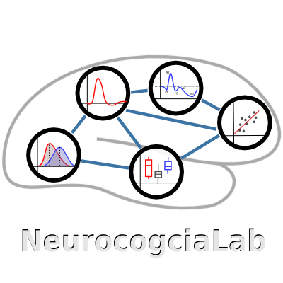

SEMANA DEL CEREBRO
del 11 al 17 de marzo, 2019 en la facultad de psicología UNAM
El laboratorio de neurocognición social, NeurocogciaLab, se presenta a la comunidad de la facultad de psicología durante la semana del cerebro, 2019!!!
Estamos muy contentos de compartir con ustedes nuestras líneas de investigación.
El humano como ser social realiza interacciones sociales en su cotidianidad para su adaptación y supervivencia. Los mecanismos cognitivos involucrados en las interacciones con los demás se han incluido en el término de cognición social.
- Nos interesa evaluar funciones cognitivas sociales como empatía, teoría de la mente o mentalización:
- EQ
- IRI
- Historia corta
- Tarea
empatom
- Las emociones son una herramienta clave para nuestras interacciones sociales y también incluimos medidas de esto en nuestras investigaciones:
- identificación de expresiones emocionales en rostros
-
También registramos medidas de estados emocionales como depresión y ansiedad:
- Una manera de afrontar actividades cotidianas-sociales que pueden ser desafiantes o, incluso, estresantes, son con nuestras estrategías cognitivas, pero el apoyo social ayuda mucho. Por eso medimos estrés y apoyo social:
- escala de estres percibido
- escala de apoyo social
Finalmente, también estamos interesados en estudiar el sustraro neurobiológico de la cognición social, por eso somos el NeurocogciaLab.
